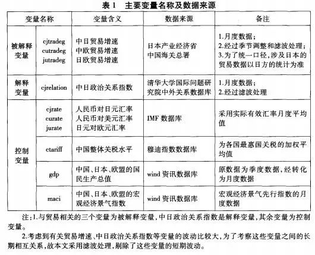
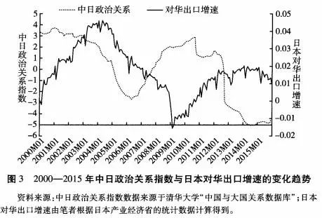
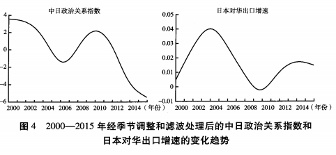
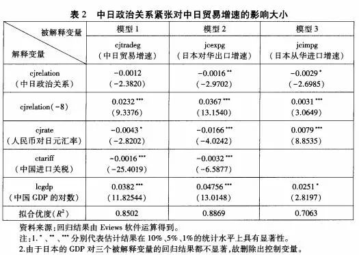
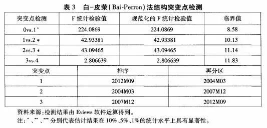
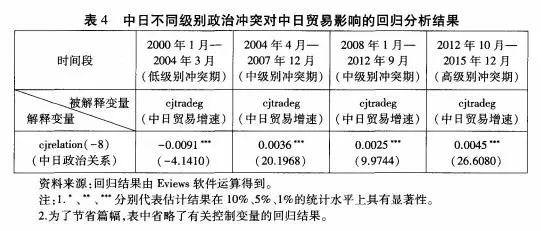
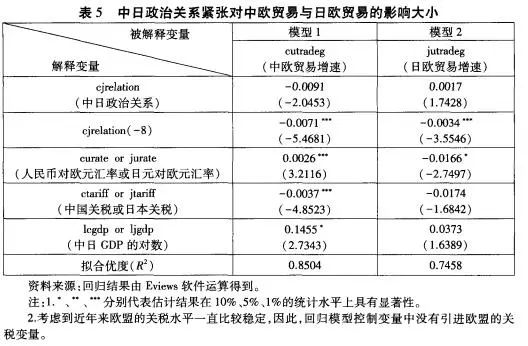

收录于合集
简
邝艳 湘
中南大学马克思主义学院副教授
向洪 金
南京审计大学经济与贸易学院副教授
【 摘要 】进入 21 世纪以来，国际局势正在发生深刻的变化，大国间地缘政治博弈和相互制衡使国际局势的不稳定、不确定因素明显增加，区域性冲突与摩擦时有发生。在全球化趋势下，国际政治冲突如何影响国际经济正成为一个热点问题，受到广泛关注，相关文献不断涌现，但深入的实证分析并不多见。作者基于 2000—2015 年中日政治关系与经贸往来的月度数据，利用计量经济学中的结构突变检验与国际贸易中的引力模型，对国际政治冲突的贸易破坏效应和贸易转移效应进行了实证研究。实证结果表明: 第一，中日政治冲突对中日贸易产生了破坏效应，冲突级别越高，破坏效应越大，但这种破坏效应具有明显的滞后性。第二，中日政治关系紧张还导致中日双边贸易部分向第三方国家转移，具有贸易转移效应，而且对中国的贸易转移效应要明显大于对日本的贸易转移效应。该研究不仅揭示了长期以来“政冷经热”与“政冷经冷”之争的根源，而且可为中国如何应对国际政治冲突提供现实依据。
【 关键词 】结构突变检验; 引力模型; 贸易破坏效应; 贸易转移效应
随着经济全球化趋势不断深入，国家之间形成了日益纷繁复杂的政治经济互动。自由主义者往往强调国际经济如贸易、外国直接投资和国际金融等影响乃至决定着国际政治关系，但是现实主义者则更多地强调国际政治关系影响乃至决定着国家间的经贸往来。但无论是自由主义者还是现实主义者，研究的共同前提设问是国际冲突是否会对国家间的经济交往产生影响。许多研究试图从国际冲突对国际经济交往的影响这一角度出发，揭示国际政治经济间复杂互动的机制和理论。
进入 21 世纪以来，中国与日本之间出现了频繁的政治波动，两国关系两度跌入低谷。2005年，因日本谋求成为联合国安理会常任理事国和篡改历史教科书问题，中国民众爆发大规模集会游行和抵制日货的抗议活动。2006 年 8 月 15 日，即将卸任的时任总理小泉纯一郎参拜靖国神社，引起中国方面的强烈不满。此后 2010 年 9 月的撞船事件、2012 年的钓鱼岛“国有化”事件更是将中日关系直接推至冰点。此外，中日作为世界第二、第三和地区第一、第二大经济体，两国经济发展态势和双边经济关系走势如何，对世界和地区经济稳定与发展影响巨大。而且，由于中 日两国一衣带水，两国间的经济联系非常密切，中日两国互为最重要的经贸伙伴，双边 经贸关系在双方对外经济关系和国内经济发展中的地位举足轻重。针对 21 世纪以来中日间的政治经济现象，许多学者对中日间的政治经济互动进行了多方面的研究和 阐述，如冯昭奎、马俊威、朱锋、刘江永、江瑞平、门洪华等纷纷就 21 世纪以来中日政治关系波动对中日经济关系的影响进行了阐述，得出了“政冷经热”“政冷经温”“政冷经冷”等复杂而相互矛盾的结论。
虽然学者们就中日政治关系如何影响中日经济活动的探讨非常具有建设性，但是简单地将中日间政治、经济关系概括为“政冷经热”或者“政冷经冷”，只是一种非常粗 略的表象描述，“只有准确地描述政治、经济关系的现状，我们才能够对背后的原因、机制等问题进行深入探讨”。而近年来，随着一些国际政治方面数据库的建立与完善，对于中日政治关系对双边或全球经济活动的影响大小进行实证分析成为可能。本文基于中日政治经济关系的月度数据，深入、系统、客观地评估中日政治冲突的经济影响，不仅可揭示“政冷经热”和“政冷经冷”之争的根源，而且可为中国最小化中日政治关系波动所带来的经济损失提供政策性建议，具有一定的理论与现实意义。其二，在全球化背景下， 本文还进一步实证考察了中日政治冲突对中欧、日欧贸易的影响，探讨了中日政治冲突对全球贸易的影响，证实了政治冲突的贸易转移效应。
相关研究综述
国际政治冲突对全球贸易和国际经济产生什么样的影响? 已有研究在这个问题上没有一致的结论，各种观点大致可分为以下几类:
第一，国际冲突对贸易没有影响。凯瑟琳·巴比尔蕾( Katherine B． Barbieri) 和杰克·列维( Jack S． Levy) 指出，从长期来看，战争对贸易几乎没有什么影响，甚至贸易会在战争后迅速恢复，快速增长。既然战争不会对贸易产生负面影响，因此经济相互依赖也根本就制约不了国家间的战争。克里斯蒂娜·戴维斯( Christina L． Davis) 和苏菲·莫尼耶( Sophie Meunier) 重点研究了政治关系的波动会否影响经济关系。他们认为，在全球化时代，由于国际贸易和投资中沉没成本的存在，经济行为体不会受到政治关系恶化的影响，因此即便是在政治关系紧张的时候，两国间的商业交往仍然照常 进行，在政治冲突和经济交往之间存在着“防火墙”。作者以美国—法国和中国—日 本之间在 2003 年和 2005 年的政治波动为例对此进行了验证。
第二，国际冲突对贸易产生显著的负面影响。巴里·布赞( Barry Buzan) 认为， 国家之间的经济交往属于低级政治领域问题，而国家安全利益则属于高级政治领域问题，国家的最高目标是确保主权的不可侵犯性和政治安全，经济往来只是达到这个目标的手段。因此，当国家考虑政治和军事安全利益的时候，军事安全考量和军事因素支配着领导人对冲突的效用的算计，国家会毫不犹豫地中断贸易联系。 查尔斯·安德顿( Charles Anderton) 和约翰·卡特( John Ｒ． Carter) 通过时间序列模型分别研究了 14 组大国之间以及 13 组非大国之间的关系，考察了战争对大国间贸易和小国间贸易的影响，无一例外地发现战争对双边贸易产生负面影响。 鲁文·格利克( Ｒeuven Glick) 和艾伦·泰勒( Alan M． Taylor) 利用引力模型，考察了 1870 年以来战争对敌对国家之间、对冲突方与中立国之间贸易的影响，认为战争不仅减少贸易， 而且减少国民收入和全球经济福利。 基利恩·海尔曼( Kilian Heilmann) 则以消费者的抗议示威活动为例，论证了国家间的政治冲突确实影响双边贸易额。作者列举了 2005—2006 年伊斯兰国家对丹麦产品的抵制、2012 年中国民众针对日本“国有化”钓鱼岛的抗议示威活动、2003年美国民众对法国产品的抵制以及2014年土耳其民众就加沙冲突对以色列的抗议示威活动，认为民众针对另一国的抗议示威活动将极大地减少两国间的贸易。杰夫瑞·格拉克( Jeffrey Ｒ． Gerlach) 和陆英淑( Young- suk Yook) 重点研究了 1999—2010 年之间朝鲜与韩国的武装冲突对韩国证券市场的影响，并区分了外国证券投资商、国内证券投资商和国内其他投资机构，发现朝鲜半岛的政治紧张对国内证券投资商的负面影响大于对外国证券投资商的负面影响。换言之，国外证券投资商对朝鲜半岛的紧张状态远不如国内证券投资商和其他投资机构敏感。
第三，国际冲突不仅对双边贸易产生影响，而且可能对多边贸易( 与第三国的贸易) 产生影响。如鲁文· 格利克和艾伦· 泰勒、马赫瓦施· 赛义德· 库雷希( Mah- vash Saeed Qureshi) 均提出，战争或军事冲突对第三国的贸易带来溢出性影响，且影响可能较大。 但也有研究认为这一影响并不大。菲利普·马丁( Philippe Martin)等人的模型假定冲突会提高双边和多边贸易壁垒，但对多边贸易壁垒只有很小的影响。
具体到中日关系，除了上文所述的定性研究外，也有一些定量研究成果。杨园和唐敏从消费者购买动机出发，认为消费者的购买行为会受到政治关系的影响，作者以中日关系为例，认为中日间 2012 年以来的钓鱼岛争端使得两国间的政治关系恶化，这对日本汽车在中国的销售产生了极大的负面影响，这种负面影响可长达 3 个月。 雷蒙德·菲斯曼( Ｒaymond Fisman) 从企业层面考察了中日政治波动对经济交往的影响，分别考察了 2005—2010 年中日间的政治波动如何影响在华日资企业和在日的中国企业的业绩。研究表明劳动密集型的日本企业受到的影响较小，但是在中国国有企业控制的产业领域运营的日本企业受到的影响较大，而中国企业受到较大影响的主要是侧重于销售消费品的企业。徐奇渊和陈思翀在《中日关系紧张对双边贸易的影响》一文中从动态的角度回答了政治关系对双边贸易的影响。研究结果表明，中日关系的紧张对双边贸易确实产生了显著的负面影响，但在不同阶段政治关系对经济关系呈现出不同的影响，从而导致了“政冷经热”“政冷经冷”的不同表现，并对此进行了解释。 但是希罗·阿姆斯特朗( Shiro P． Armstrong) 基于前沿引力模型，对中日政治关系对双边贸易的影响进行了分析，样本期为 1986—2006 年。研究结果表明，中日政治关系的紧张并没有对贸易关系造成影响。
已有研究未能解决两个方面的问题: 第一，国际冲突的级别如何影响贸易? 已有研究侧重于某种国际冲突的形式如战争或者消费者的抗议示威活动，或者某一具体 冲突事件对双边贸易的影响，但对于不同级别冲突将对贸易产生什么样的不同影响缺乏研究。第二，鲜有文献提及国际冲突背景下，冲突国可能转移贸易方向，发展与第三方的贸易往来以减轻国际冲突带来的损失。
查德·鲍恩( Chad P． Bown) 和梅瑞狄斯·克劳利( Meredith A． Crowley) 将反倾销的贸易效应分为四种: 贸易破坏效应( trade destruction effect) 、贸易转移效应( trade diversion effect) 、贸易偏转效应( trade deflection effect) 与贸易抑制效应( trade depres- sion effect) 。同反倾销等贸易制裁措施一样，国家间政治冲突也会增加双边贸易的不确定性和风险，从而抑制或阻碍双边贸易的发展，高级别的政治冲突甚至会导致有关国家直接中断双边贸易。因此，国家间政治冲突也具有贸易破坏效应。不仅如此， 本文还认为，在经济全球化时代，国家政治冲突除了影响当事国间双边贸易，还会进一 步影响当事国与其他国家间的贸易。本文将政治冲突的这种影响称为贸易转移效应。由于数据的缺乏，中外已有相关文献大多定性地探讨政治冲突对当事国双边贸易的影响，而定量分析尤其是关于政治冲突的贸易转移效应的实证研究比较鲜见。
研究设计与数据收集
为了弥补已有文献的不足，本文对政治冲突的贸易效应进行比较深入和全面的定量分析。在进行实证分析之前，先对本文的实证方法与数据来源进行简要介绍，并对中日政治关系指数与中日贸易增速二者的变化趋势进行直观分析。
( 一) 案例和研究方法选择
本文重点选择中日关系作为案例进行实证研究，原因如下: 第一，进入 21 世纪以来，由于历史遗留问题，中日之间的政治关系波动较大，易于考察不同级别冲突对双边贸易的影响大小; 第二，中日两国分别为世界第二、第三大经济体，中日间的经济相互依赖程度较高，均为对方重要的贸易伙伴国，而且中日同世界上其他国家或国家集团的贸易联系也非常密切; 第三，中日之间的政治关系、进出口贸易等数据比较翔实。因此，选择中日政治经济互动作为分析对象，具有很好的代表性和可行性。
为了实证考察中日间冲突的贸易破坏效应和贸易转移效应，本文采用国际贸易实证研究领域使用最为广泛的引力模型( gravity model) 进行实证分析。引力模型可以解释经济总量、空间距离、人口规模等因素对有关国家间贸易流量的影响大小和方向，已成为国际贸易领域最重要的研究方法。古典贸易理论与新古典贸易理论从不同视角解释了国际贸易产生的原因，却很难解释国际贸易流量大小的影响因素。基于经典力学中牛顿万有引力公式建立的一种理论假说，简·丁伯根( Jan Tinbergen) 最早将引力模型的原理引入国际贸易流量的研究当中，用来解释国家间贸易流量的决定和影响因素。 詹姆斯·安德森( James E． Anderson) 等经济学家为引力模型建立了理论基础。 近年来，引力模型在国际贸易流量研究领域得到广泛应用，这些研究发现，除了经济规模、人均收入、汇率、地理距离等因素外，贸易成本、政治制度以及语言文化因素等也对国家间贸易流量起着非常重要的作用。
( 二) 变量的选择和数据的收集
被解释变量选择。根据已有相关研究，被解释变量有三种选择: 中日进出口贸易额、中日进出口贸易额的占比与中日进出口贸易额增速。其中中日进出口贸易额 更多地取决于中日关税水平与宏观经济总量等因素，而进出口贸易额的占比变量属 于国家间的横向比较指标，受中日两国宏观经济景气度的影响较小，更能体现中日政治关系对中日贸易的影响。但是，由于中国和日本对外贸易总额的巨大差异，中日间进出口贸易额在中国对外贸易的占比和在日本对外贸易中的占比也不同。综 上所述，本文将选择中日进出口贸易额增速作为被解释变量。具体来说，为了全面地考察中日关系紧张对中日间贸易破坏效应的大小，我们将选择中日贸易总额的增速、日本对华出口额增速和日本自华进口额增速三个被解释变量，从三个不同的方面对贸易破坏效应进行实证和比较分析。为了考察中日政治关系紧张的贸易转移效应大小，本文选择中国与欧盟贸易额增速、日本与欧盟贸易额增速等作为被解释变量。
关于解释变量和控制变量，本文选择中日政治关系作为解释变量，但是如何测度中日政治关系是关键。由于国家间政治关系主要体现在一些政治事件上，而这些政治事件往往是独立的、非连续的。已有文献往往通过将某个政治事件作为虚 拟变量引入回归模型，但是本文考察的时间段比较长，涉及中日间的众多政治事件，因此利用虚拟变量的方法不适合本文的实证分析。庆幸的是，清华大学国际问题研究所通过对中国与美日俄等主要国家的外交事件进行整理并赋值量化，编制 了“中外关系数据库”。 该数据库提供的高频率( 月度) 数据使得对中日政治关系的经济影响进行量化分析成为可能。这个指数越大，表明双边政治关系越好，反之则越差。
当然，双边贸易除了受到国家间政治关系影响外，还会受到汇率、宏观经济景气以 及关税水平等因素的影响。为此，本文选择中日( 或者第三方国家) 的国内生产总值( GDP) 、货币的汇率、关税水平以及宏观经济景气指数等作为控制变量。 实证考察的时间段为2000 年 1 月至 2015 年 12 月，共192 个样本。 笔者从中国海关总署收集到中国与日本、欧盟等的进出口贸易额月度数据，从 wind 资讯等数据库收集了中国、日本、欧盟等的宏观经济景气度指数的月度数据以及它们的 GDP 季度数据，从国际货币基金组织( IMF) 的数据库中收集了有关各方货币的实际有效汇率月度数据。各方整体关税水平数据来自穆迪指数数据库( Index Mundi) 。

( 三) 数据的季节调整与滤波处理
由于本文实证涉及的变量较多，而且变量均采用月度数据，部分变量容易受到季节、宏观经济景气度、国际政治环境等因素的影响，变量的数值波动比较大。因此，在进行实证之前，有必要对部分变量进行平滑处理，以消除一些短期波动的干扰，从而准确地估计出变量之间长期稳定的关系。
图 3 表明，在考察期内，中日政治关系指数与日本对华出口增速两个变量的波动都比较大，而且很难直接从中看出两者之间的共同变化趋势。在部分时间段内，二者呈反向变动趋势，在有些时间段内，二者却呈同方向变动。

为此，本文首先对贸易变量进行季节调整，以消除季节性因素的影响。季节调整只能消除时间序列中的季节因素的影响，但季节调整后的序列中仍然包含长期趋势和波动。序列中的长期趋势及其影响是我们所关心的，因此，需要剔除序列中的波动 成分。本文采用 Hodrick-Prescott 滤波法来平滑序列中的不规则波动。由于中日政治关系并没有存在明显的季节变动，不需要进行季节调整。但是，原序列呈现比较大的不规则波动，为了剔除不规则波动对回归结果的干扰，需要进行指数平滑。图 4 是经季节调整和滤波处理后的中日政治关系指数和日本对华出口增速的变化趋势。

从图 4 可以看出，经过季节调整和滤波处理后，中日政治关系指数和日本对华出口增速两个变量变得更加平滑，二者之间的变化趋势也更加明显。二者均呈现波动式下降，但是波动不同步，这表明中日政治关系对中日贸易的影响具有一定的时间滞后性。
实证结果及其解读
对图 4 的直观分析表明，近年来中日政治关系与中日贸易均呈波浪形下降趋势，说明二者之间可能具有相关关系。不过，二者之间并没有呈同步变化，具有一定的时滞性。为了准确测度出中日政治关系对中日贸易以及中、日与第三方贸易的影响大小 和方向，本文利用所收集的月度数据，借助 Eviews 软件进行回归分析。
( 一) 中日政治关系紧张对中日贸易的破坏效应
本研究以中日贸易增速、日本对华出口贸易增速、日本自华进口贸易增速三个变量作为被解释变量，中日政治关系指数作为主要的解释变量，同时选择汇率、经济景气 度、关税等作为控制变量。
考虑到国家间政治冲突对贸易的影响往往具有滞后性，因此，为了提高实证模型 的解释力，本文在回归方程中引进中日政治关系指数的滞后变量。赤池信息量准则 ( AIC) 和施瓦茨信息准则( SC) 是确定时间序列变量的滞后期常用的两种方法。其中AIC 适合小样本分析，SC 适合大样本分析。根据李子奈和潘文卿在《计量经济学》一书中的论述，在选择时间变量的滞后期时，可以参考 AIC 或 SC 统计量的值，当滞后期的增加不能显著降级 AIC 或 SC 的值时，则应停止加入更长的滞后期。本文实证分析用的是月度数据，样本较大，故选择 SC 准则来确定解释变量的滞后期。回归结果表明，当解释变量的滞后期为 8 时，对应的 SC 统计量的值最小。因此，解释变量( 中日政治关系指数) 的最优滞后期为 8。表 2 为利用 Eviews 软件进行回归分析得到的结果。表 2 第三行中的回归结果说明，虽然中日政治关系指数对中日贸易增速影响不显著，但当期的中日政治关系指数与当期的中日贸易增速、日本对华出口增速、日本自华进口增速三个被解释变量均呈负相关关系。如果仅根据有关变量当期的回归结果，我 们很容易得出中日双边政治经济关系出现“政冷经热”的现象。然而，表 2 第四行的回归结果表明，中日政治关系指数变量滞后 8 期的变量对三个被解释变量的回归系数均为正值，而且均通过 1% 的显著性统计检验。这表明，中日政治关系紧张对中日贸易的负面影响具有比较长( 8 个月左右) 的时滞性。因此，中日间“政冷经热”现象只是一种短期的表象，从长远来说，中日政治关系紧张对中日贸易产生较为显著的负面 影响，或者说，中日政治关系紧张对中日贸易具有显著的破坏效应。

不仅如此，回归结果还表明，中日政治关系紧张对日本对华出口贸易的破坏效应 要远大于对日本自华进口贸易的破坏效应。可能的主要原因有两个: 其一，中日贸易的产品特征。日本对华出口产品以制成品或耐用品为主，这些商品受政治关系的影响较为显著，而中国对日本出口的产品以农产品、服装与能源矿产为主，这些产品的贸易受双边政治关系的影响较小。其二，中日民众对中日历史问题的看法。在中日历史问题中，中国是受害国，日本是加害国，因此，中国民众对中日政治关系紧张的反应会更 加敏感和强烈，从而导致中国消费者对日本产品的抵制更加强烈。
为了进一步比较分析中日间不同级别的政治冲突的贸易效应，有必要对回归方程进行结构突变点检测。本文利用 Eviews 软件中的白—皮荣( Bai-Perron) 法对回归方程进行结构突变点检测，以便更加准确、客观地找到中日政治关系贸易效应的结构突 变点，然后分段进行回归分析以便比较中日间不同级别政治冲突贸易效应的差异。本 文对表 2 中的模型 1 进行结构突变点检测，检测结果见表 3。

检测结果表明，在模型1中存在三个结构突变点，分别是 2004 年 3月、
2007 年 12月和 2012 年 9 月。其中图 4 表明，2000—2004 年中日政治关系指数值在( 2，3．3) ，中日政治关系虽然呈不断下降趋势，但中日政治关系指数还维持在较大的正值，这反映了中日政治关系虽 然摩擦不断，但双边政治冲突处于较低水平。2004—2007 年和 2008—2012 年期间中日政治关系指数的值在( －2，2) ，或者说中日政治关系指数值在 0 上下波动，表明中日政治摩擦处于中等级别。2012 年 9 月日本钓鱼岛“国有化”事件爆发后，中日政治关系急剧下降，中日政治关系指数的值下降到负 5 左右，双边冲突也开始出现由政治摩擦向军事冲突蔓延的趋势。根据中日政治关系指数值所在的变化区间，可以将上述四个时间段内的中日政治冲突区分为: 2000—2004 年的低级别冲突、2004—2008 年以及2008—2012 年的中等级别冲突、2012 年以后的高级别冲突。本文利用中日贸易增速作为被解释变量，在上述四个时间段上分别进行回归分析，回归结果见表 4 所示。
从表 4 的回归结果可以看出，中日政治关系对中日贸易的影响具有显著的阶段性，或者说中日间不同级别政治冲突的贸易效应存在显著的差异。在 2000 年 1 月至2004 年 3 月中日低级别政治冲突期间，中日政治关系对中日贸易增速的回归系数为负值，这表明在此期间，中日政治关系指数与中日贸易增速呈负相关关系，或者说在这 段时期内，中日双边贸易并没有随着中日间政治关系的降温而降低，相反中日双边贸易在这段时间内逆势增加，从而出现所谓的中日间“政冷经热”现象。从表 4 的第二和第三回归结果表明，中日之间中级别政治冲突的贸易破坏效应开始显现，中日政治关系指数值越低，日本对华出口贸易的增速越低。这就是所谓的中日间“政冷经冷” 现象。表 4 中第四个回归结果则表明，2012 年 10 月以后中日政治冲突的贸易破坏效应比 2004 年 4 月至 2012 年 9 月期间的贸易破坏效应更大、更显著。综上，国家间政治冲突对贸易的影响具有门槛效应，只有当冲突级别达到一定强度后，其对贸易的不利影响才会凸显，而且冲突的强度越高，其贸易破坏效应也越大。

( 二) 中日政治关系紧张的贸易转移效应
中日政治关系紧张导致中日双边贸易受阻后，中国和日本与其他国家的贸易可能会增加，这就是所谓的贸易转移效应。为了实证考察中日政治关系紧张的贸易转移效 应，本文选择欧盟作为第三方国家。选择欧盟的原因有二: 首先，中国和日本均是欧盟的主要贸易对象，具有较强的代表性。其次，2000—2015 年，中国和日本与欧盟的政治关系相对都比较稳定，从而使实证结果更加具有说服力。
本文分别选用中欧和日欧的贸易额增速作为被解释变量进行回归分析，具体结果见表5。从实证结果可以发现，中日政治关系紧张在当期对中欧与日欧的贸易均没有显著影响。但是，中日政治关系指数滞后期变量与中欧和日欧贸易均呈负相关关系， 而且均通过显著性水平 1%的统计检验。这表明，从长期来看，中日政治关系紧张( 指数变小) ，将导致中欧贸易和日欧贸易均有所增加。其中可能的原因是，由于中日关系紧张，导致原来在中日之间进行的贸易转移到欧盟国家，从而促进了中欧贸易和日欧贸易。因此，表 5 中实证结果表明，中日政治关系紧张确实具有显著的贸易转移效应。不仅如此，通过比较可以发现，中日政治关系紧张对中欧贸易的转移效应要远大 于日欧贸易的转移效应。

( 三) 稳健性检验
为了检验实证结果的稳健性，本文利用中日进出口贸易额的对数、中欧贸易进出 口额的对数、日欧进出口贸易额对数等来替换上述实证中的被解释变量，重新进行回 归分析。回归结果仍然具有较高的显著性，中日政治关系指数等变量的回归结果均通 过统计性检验，这说明本文采用的实证模型具有相当的稳健性。
结论
本文以中日关系为例，对 21 世纪以来两国间频发的政治冲突如何影响贸易进行研究，得出了如下结论。
第一，中日间的政治冲突具有贸易破坏效应，且冲突的级别越高，对贸易的破坏效 应越大。比如在 2000 年 1 月至 2004 年 3 月期间，中日政治关系与中日贸易增速呈反向变动趋势，出现所谓的“政冷经热”现象。不过，从 2004 年下半年开始，中日政治关系紧张的贸易破坏效应逐渐凸显，且自 2012 年以来，这种贸易破坏效应有加大趋势。不仅如此，中日政治关系紧张对中日双边贸易的负面影响具有不对称性，比较而言，对 日本对华出口的破坏效应要大于对日本自华进口的破坏效应。
第二，中日政治关系紧张不仅影响中日双边贸易，而且会影响中日与其他国家贸易。实证结果表明，中日政治关系紧张将导致中日双边贸易部分向第三方转移，具有 贸易转移效应。而且，对中国的贸易转移效应要明显大于对日本的贸易转移效应。
针对中国许多已有研究指出的“政冷经热”“政冷经温”“政冷经冷”现象，本文认为: 由于中日政治关系对双边贸易的影响具有门槛效应，只有双边政治关系的波动幅度达到一定的剧烈程度，才会对双边贸易产生显著的影响。且由于中日政治波动对经 济的负面影响具有时滞效应，需要一段时间( 8 个月) 才显现出来，因此当冲突的级别不是很高且冲突延续时间不长时，贸易的破坏效应并不明显，且很可能被其他宏观经济因素掩盖。
通过借鉴贸易反倾销的四种贸易效应，本文区分了国家间冲突的贸易破坏效应和 贸易转移效应，并考察了不同级别的冲突对贸易的影响。研究结论表明，冲突的级别越高，冲突的贸易破坏效应也越大; 反之，如果冲突级别不是很高且延续时间不长，贸易破坏效应可能不明显。此外，冲突国的贸易替代性越大，贸易的转移效应越大，因而 所遭受的贸易损失越小。因此，这也可以多少解释已有研究中不同甚至截然相反的结论，弥合已有研究在这个问题上的分歧。
****注：完整内容及参考文献可参看原文。
文章来源： 《世界经济与政治》 2017年第9期
筛选：早安老师 编辑：早安老师 凌宇